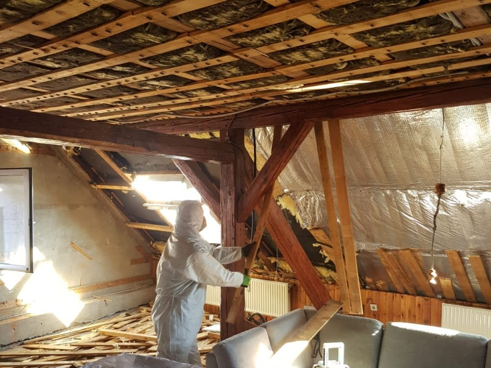
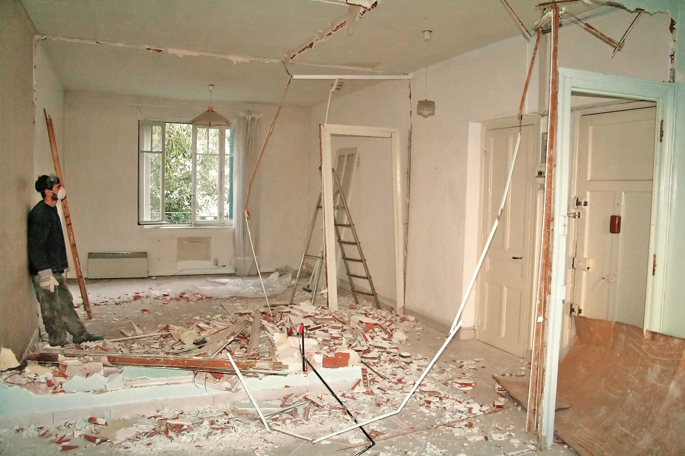
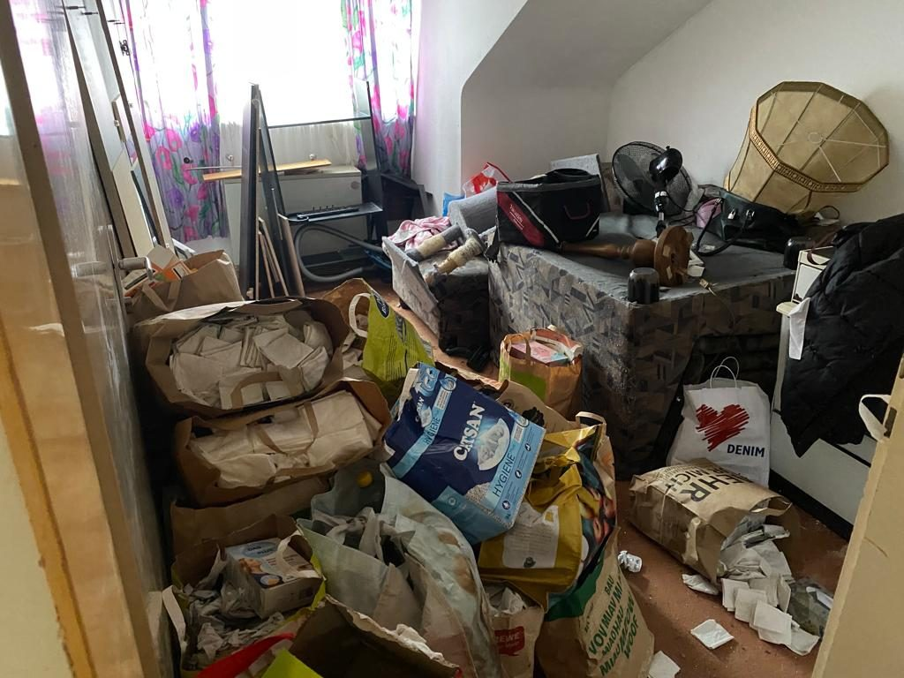
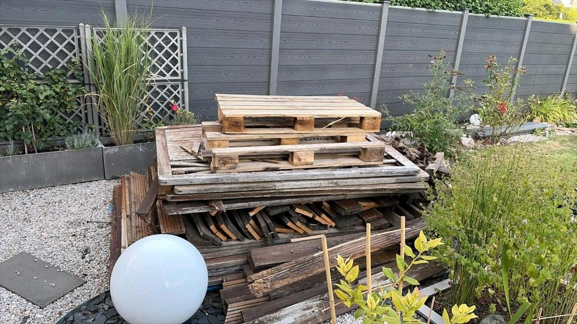

Kleinabriss
Bauten und Bauteile, die komplett weg sollen, vom Gartenhaus bis zur Garage.

Landkreis Harburg · Niedersachsen
Ein Ladenlokal in der Ortsmitte wird frei, die Wohnung darüber soll modernisiert werden, oder ein ganzes Haus in Putensen braucht einen Neuanfang: In Salzhausen entkernen wir bis auf den Rohbau und übergeben besenrein.
Salzhausen gilt als zentraler Ort der Hohen Geest. Um 850 wird es als Urpfarrei genannt, die erste Urkunde stammt von 1057. Der Turm der St.-Johannis-Kirche wurde 1480 gebaut, die Kirche selbst 1643 in ihrer heutigen Form aus Feldsteinen mit Fachwerk-Rückfront. 1852 wurde Salzhausen Amtssitz. Im früheren Amtshaus arbeitet seit 1907 ein genossenschaftliches Krankenhaus. Nach 1945 nahm die Gemeinde bei damals 1.015 Einwohnern 708 Vertriebene und 104 Flüchtlinge aus der sowjetischen Zone auf.
Seit 1972 ist Salzhausen Sitz der gleichnamigen Samtgemeinde mit acht Mitgliedsgemeinden. Zur Gemeinde gehören seitdem auch Luhmühlen, Oelstorf und Putensen. Ende 2025 lebten 4.914 Menschen auf knapp 35 Quadratkilometern. Luhmühlen ist für die Vielseitigkeitsreiterei bekannt; beim Ausbau des Ausbildungszentrums um 2010 wurden dort zwei alte Reithallen abgerissen und durch neue ersetzt.
Für die Ortsmitte rund um Hauptstraße, Lüneburger Straße, Schulstraße und Am Lindenberg gilt ein Bebauungsplan aus den 1980er Jahren, zuletzt 2012 geändert. Seine Begründung beschreibt meist zwei- bis dreigeschossige Häuser mit Läden und Dienstleistern im Erdgeschoss und Wohnungen in den Obergeschossen und auf den hinteren Grundstücksteilen. Mit der Änderung von 2012 sind Vergnügungsstätten dort ausgeschlossen.
Wechselt der Mieter eines Ladens, muss die alte Einrichtung häufig ganz raus. Bei einer Entkernung bauen wir Theken, Deckenverkleidungen, Böden und nichttragende Wände aus und sortieren das Material für die Entsorgung. In der Wohnung darüber kann es um Bad, Küche und alte Beläge gehen. Danach ziehen wir auf Wunsch neue Trennwände im Trockenbau ein.
Die Denkmalliste für Salzhausen nennt unter anderem einen Außenschafstall an der Lobker Straße, Teile der Wassermühle am Mühlenweg, eine Villa an der Schnede und das Wohnhaus Am Lindenberg 3, das von 1859 bis 1907 Gendarmeriestation war. Ob für Arbeiten an einem solchen Haus eine denkmalrechtliche Genehmigung nötig ist, klären Sie vor Beginn mit dem Landkreis Harburg.
In der Übersicht der Samtgemeinde zu kommunalen Baumschutzsatzungen im Landkreis taucht Salzhausen nicht auf. Eine Fällung kann trotzdem genehmigungspflichtig sein: Seit dem 1. Januar 2021 braucht eine Baumfällung, die einen Eingriff im Sinne des Naturschutzrechts darstellt, vorher die Genehmigung der unteren Naturschutzbehörde. Manche Bebauungspläne schreiben zudem den Erhalt einzelner Bäume vor, und von März bis September ist das Beseitigen von Hecken und Gebüsch grundsätzlich verboten.
Die untere Bauaufsicht für Salzhausen liegt beim Landkreis Harburg, dessen Abteilung Bauen in Winsen (Luhe) sitzt. Maßgeblich ist die Niedersächsische Bauordnung (NBauO). Für eine Entkernung, bei der tragende Bauteile stehen bleiben, ist in der Regel kein Bauantrag nötig. Wird dagegen nur ein Teil eines Gebäudes abgebrochen, der im Anhang der NBauO nicht vorkommt, verlangt das Gesetz eine Anzeige samt Bestätigung zur Standsicherheit. Bleibt eine Frage offen, klären wir sie vor Arbeitsbeginn mit der Behörde in Winsen.
Für Einschränkungen des öffentlichen Verkehrsraums verweist die Samtgemeinde auf die verkehrsbehördlichen Aufgaben des Landkreises. Ob Ihr Container dafür einen Antrag braucht, erfahren Sie im Rathaus am Rathausplatz 1. Fehlt in der Ortsmitte der Platz auf dem Grundstück, planen wir die Abfuhr so, dass der Container möglichst kurz steht.
Die Anfahrt aus Hamburg-Altona ist im Festpreis enthalten. Beschreiben Sie Ihr Vorhaben im Anfrageformular. Für eine weitere Gemeinde der Samtgemeinde gibt es die Seite Toppenstedt.
Leistungen
Bauten und Bauteile, die komplett weg sollen, vom Gartenhaus bis zur Garage.
Räume bis auf den Rohbau zurück, z. B. vor einer Sanierung.

Gezielter Rückbau einzelner Bauteile in bewohnten Häusern.

Wohnung, Keller, Dachboden oder Garage leer räumen, auch ganze Haushalte.

Garten oder Kleingarten komplett räumen: Laube, Platten, Grün, Gerümpel.

Schutt von Ihrer Renovierung abholen lassen, auch ohne Abriss.
Häufige Fragen
Nach Ihrer Anfrage melden wir uns innerhalb eines Werktags und vereinbaren eine Besichtigung, auch abends ab 16:30 oder samstags. Wie lange die Arbeit dauert, hängt von Fläche und Einbauten ab; Zeitraum und Festpreis nennen wir nach dem Termin.
Ja. Die betroffenen Leitungen legt vorher ein Elektriker still, das Wasser sperrt ein Installateur ab. Diese Arbeiten übernehmen wir nicht, wir stimmen aber den Ablauf mit den Betrieben ab.
Ja. Wir räumen das Haus bis auf tragende Wände, Decken und Dach aus, trennen das Material und übergeben besenrein. Asbestverdächtige Bauteile entfernt vorher ein berechtigter Fachbetrieb, den wir vermitteln.
Kontakt
Kostenlos und unverbindlich, vor Ort oder per Video. Wir melden uns innerhalb eines Werktags.
Eine Anfrage für alles: Kreuzen Sie einfach alle Arbeiten an.
Einsatzgebiet